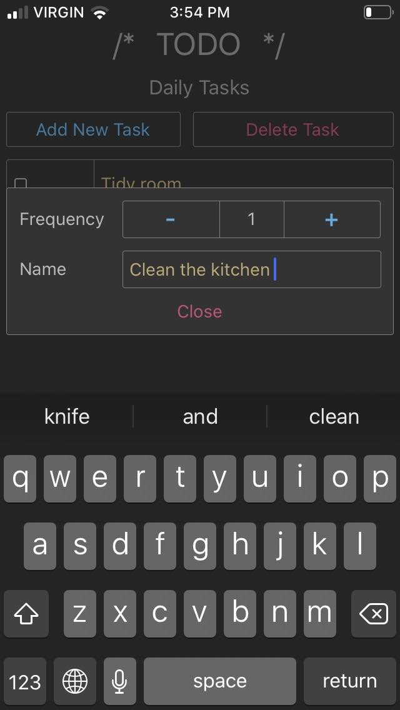
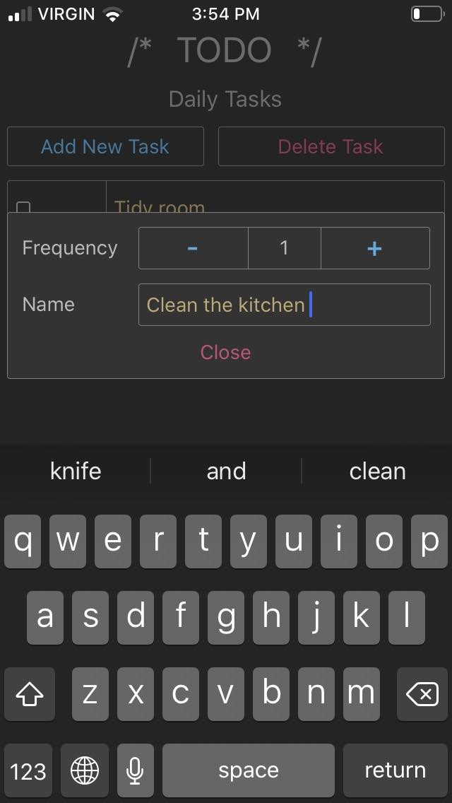
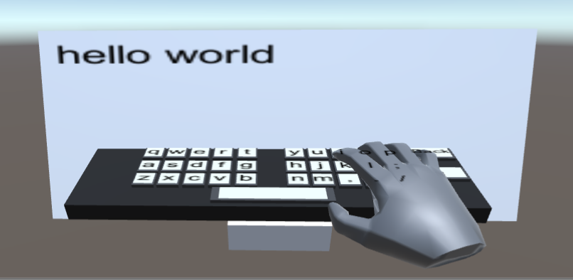
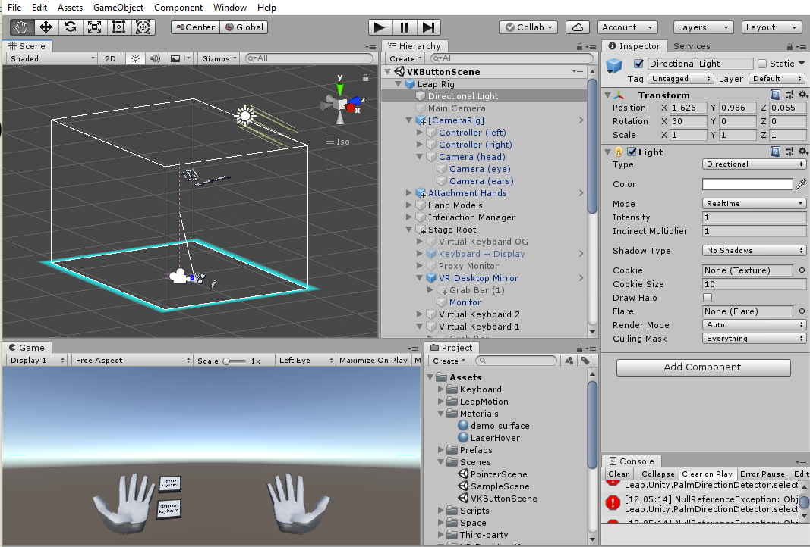
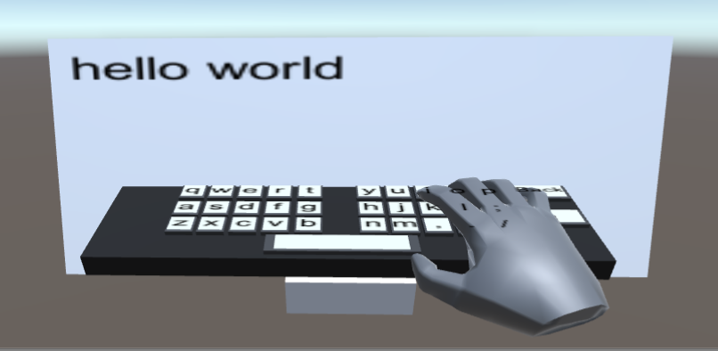
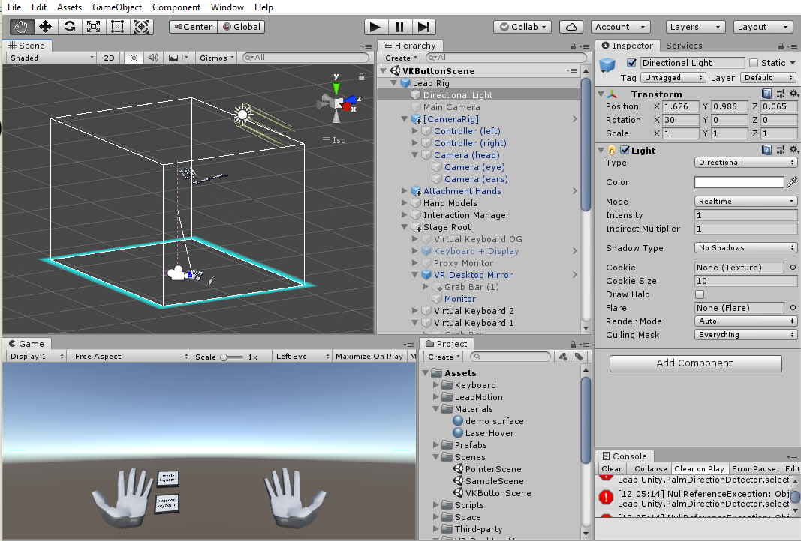
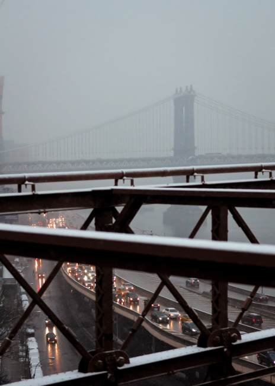
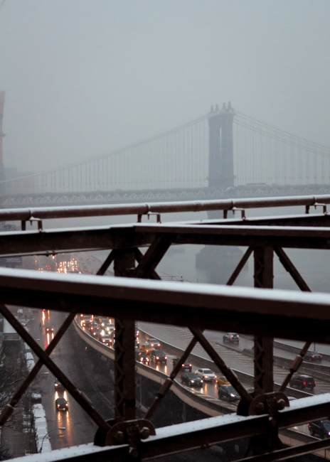
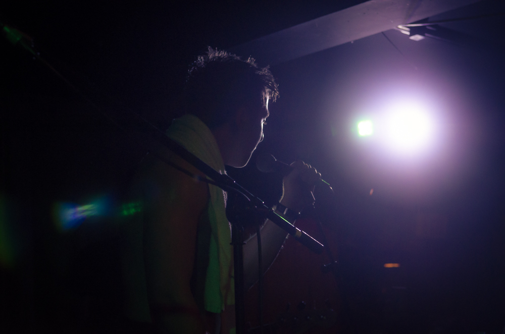
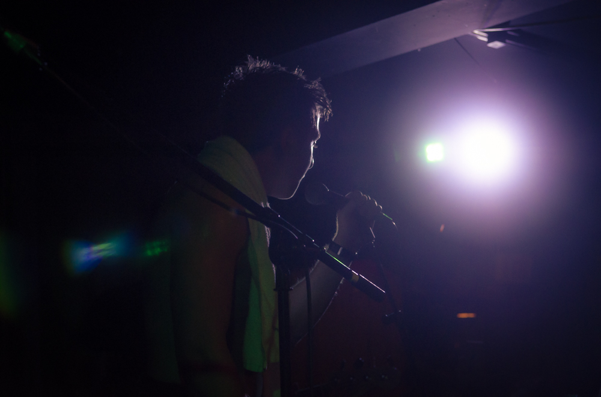

Programming Projects
LFGBot Discord Application
React.js, Discord.jsThis is a Discord bot that will maintain a clean Looking For Group channel in your gaming Discord server. It was designed for the game Albion Online, but is suited for any multiplayer game.
The bot will listen a specific text channel, and accept commands in the form !lfg [group_type] [content_description]. Any messages in the channel will be deleted, and those with a valid command are replaced with an embed containing all the information needed to join the group, and an invitation to the host's voice channel.
The group_type can be linked to a mentionable role on your server so that players can be pinged for content that they're interested in.
The !lfg command will only be accepted if the host user is in a voice channel on the same server as the master channel. Only one post is permitted per user, any posts made after the first will be ignored.
The bot by it's nature will filter out spam, and meaningless messages. Additionally, when the host leaves their voice channel the post will be deleted if they do not return within 3 minutes. This ensures that all posts are current, giving your members a list of all the available content at a glance.
The bot can be configured to broadcast the embeds to channels on different servers, which can help improve the visibility of your posts.
TODO App
React Native, expo_cli, SQLite 



The TODO app was a quick project that I started to introduce myself to mobile development using React Native. I used the managed workflow in expo_cli so that I could develop on my desktop PC while still testing on my iPhone. Since this is a simple, offline app I chose to use SQLite as a database.
The app offers three different lists: the "One-Off Tasks" for unusual or infrequent tasks, and the Daily and Weekly lists for recurring tasks. These two lists will reset completed tasks at the end of every day/week.
Adding and removing tasks is done using the buttons at the start of each list. Users can record completed tasks by tapping on a list item, and tasks can can reset manually with a tap and hold. Navigating between lists is done by swiping left or right.
Engineering Capstone Project
Unity, LEAP Motion, HTC Vive, Visual Studio 



For our capstone project, three friends and I decided to see if we could use the LEAP Motion sensor to build a virtual working environment that would allow people to use their computers with a VR headset instead of a monitor and keyboard.
The Leap Motion sensor is a product that attaches to a VR headset and captures positional data about the user's hands. This data is made available to developers through the LEAP SDK, which renders a set of hands into Unity that can interact with other game objects.
While our keyboard suceeded in allowing equivalent typing speeds to the keyboards that rely the Vive's controllers, we wouldn't want to write an essay with it!
 



 
